UBUNTU
Paso 1: (Instalación de UBUNTU).
Primero debemos hacer una busqueda en internet para descargar un archivo, el cual sera el UBUBTU, una vez teniendo ese archivo descargado precederemos a extraerlo, ya que es un archivo comprimido, concluida la extraccion pasaremos al paso dos.
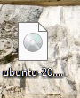
Paso 2: (Descargar e instalar VirtualBox)
Como siguiente paso instalaremos VirtualBox, una vez descargado, lo ejecutaremos y continuaremos con el paso tres.
 Paso 3: (Nuevo).
Una vez ejecutado el programa, nos aparecera una ventana donde seleccionaremos la opcion de "nuevo", una vez seleccionada esa opcion colocaremos el archivo descargado (Ubuntu).
Paso 3: (Nuevo).
Una vez ejecutado el programa, nos aparecera una ventana donde seleccionaremos la opcion de "nuevo", una vez seleccionada esa opcion colocaremos el archivo descargado (Ubuntu).
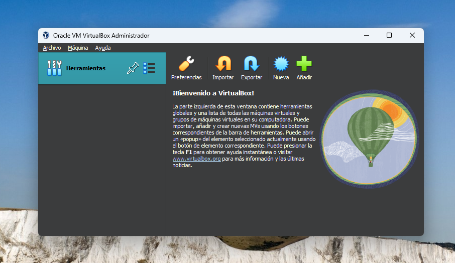
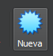
Paso 4: (Seleccionar archivo Ubuntu).
Como cuarto paso, al seleccionar la opcion de "Nuevo" Nos saldra una nueva ventana la cual nos mostrara una serie de datos para llenar (Nombre, Carpeta, Imagen ISO, Tipo y Version) Solo nos interesa ajustar el "Nombre" aqui pondremos cualquier cosa, y la imagen ISO" sta ultima sera el archivo que descargamos previamente.
Seleccionaremos la opcion de: Imagen ISO y nos aparecera la ventana de nuestros archivos y automaticamente saldra el archivo descargado, lo seleccionamos.
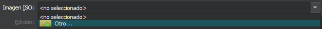
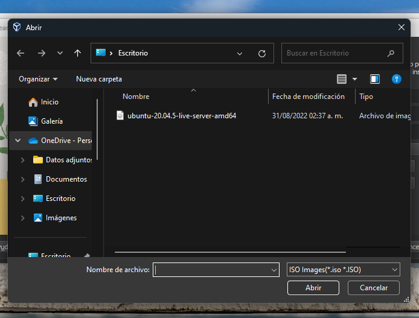
Hecho el paso anterior, quedara de la siguiente manera, asi como se muetra en la siguiente imagen.
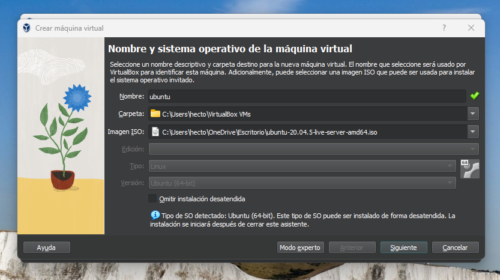
Paso 5: (Siguiente ventana)
Al darle siguinete nos mostrara una ventana nueva, la cual sera nuestro usuario y contraseña, deberemos recordar que fue lo que pusimos, ya que mas adelante lo ocuparemos.Finalmente tendra que quedar de la sigueinte anera.
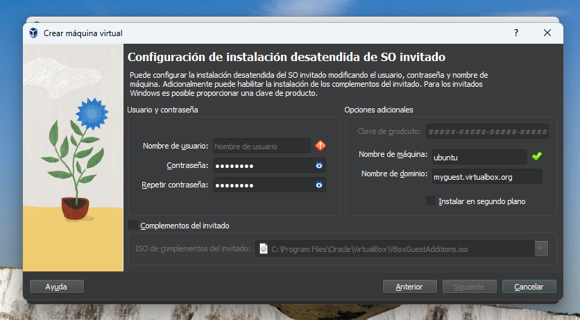
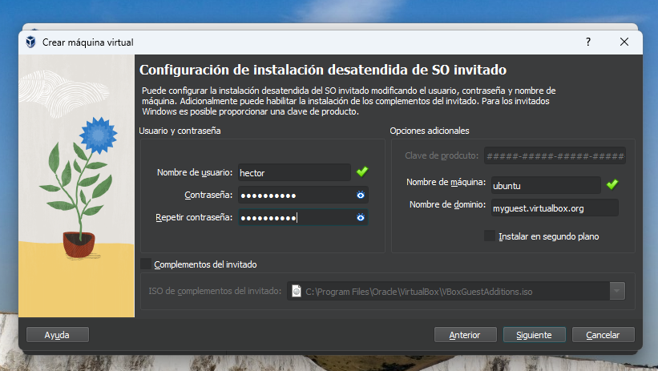
Paso 6: (Cambio de Hardware).
En esta ventana nos muestra una opcion por si queremos cambiar el Hardware de nuestra maquina virtual, ya sea la memoria o los procesadores. En este caso, djamos todo como está
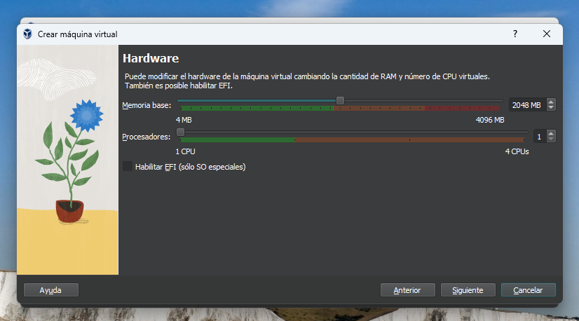
Paso 7: (Disco duro).
Una vez seleccionado como queremos el Hardware, procederemos a pasar a la otra ventana, la cual es el cambio de disco duro; Al igual que el hardware, lo dejremos tal cual lo tenemos por defecto y pasaremos a la siguiente imagen.
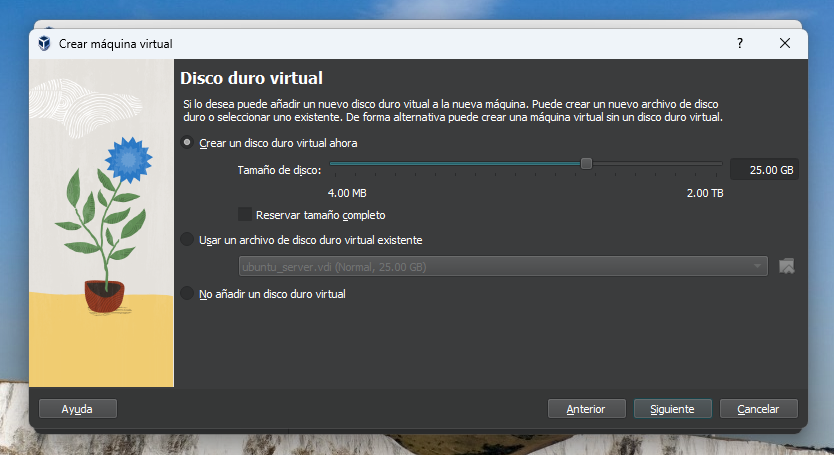
Paso 8: (Pantalla de resumen).
En la pantalla de resumen solo nos mostrara lo que seleccionamos, asi que no seleccionaremos nada, solo pondremos terminar.
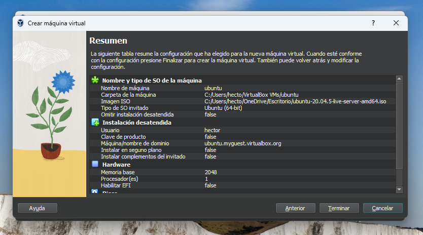
Paso 9: (Instalacion).
Esperaremos a que se instale, para despues abrir, hacer descargas y modificaciones de idioma etc.
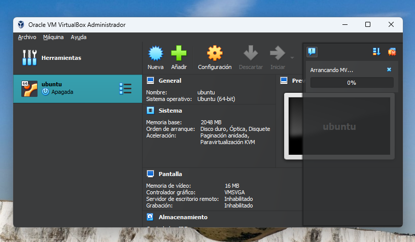